Pay Items within US Payroll
For more information about Pay Items, click on any of the links below:
Types of Pay Items Currently in Use by US
- Hours - Use with pay items which will be mapped to Earnings Categories that use Hours and Wages. Categories such as Hourly Earnings (HE) or
- Subtotal - Use with any Earning or Calculation that does not require hours to be displayed on a pay slip.
Pay Items used in US Payroll
A standard set of First Base Pay Items has been created to handle most Payroll issues. Items are reserved for Earnings, Employee Tax Withholding, Employer Tax Burden, Fringes in Pay, Fringes not in Pay, Pay Calculation Deduction,
Additional Pay Items are used to hold Gross Wages, Total Employer Burden Cost, Total Deductions, Total Burdened
It is not necessary to use Pay Items in the Union Rate File or the
Significant Pay Items in Payroll Company Configuration
Payroll Company Configuration holds significant pay items. This file explicitly details the pay items that represent specific values of pay such as Gross, Reimbursable, and Net Wage items, Statutory Employee Withholding items, Statutory Employer items, and the item representing Total Burden.
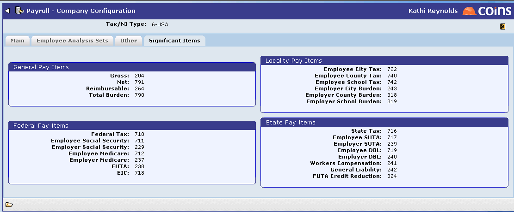
Sequences
While Pay Items can be created in any order, their appearance in a sequence must follow payroll logic. For example, we must know an employee's Social Security Gross before we can calculate the Employee or Employer Tax. While a standard sequence will be included in First Base, it is important to understand how to create and modify a sequence.
Generally, a sequence will hold the pay items that comprise Gross Wages (including Fringes included in Pay), followed by Deductions, followed by
Gross Wages
Add: Taxable Fringes in Pay
Less: Non-Taxable Deductions
Taxable Gross
By following the prescribed setup, determining Wages subject to Tax will occur prior to calculating any taxes.
Using Pay Items and Sequences to Determine Other Wages
Occasionally, the need will arise to run a calculation against a value other than Gross Wages. For example, you may need to process a Bankruptcy judgment which is written as 10% of Disposable Earnings. Disposable Earnings may be defined for each employee subject to judgment.
In this case, you would create a Pay Item that is the sum of Gross Wages plus Fringes in Pay less Existing Deductions, in other words, 401K Deduction. This new pay item would need to be added to your sequence, and must appear before Net Pay, but after Withholding Taxes. Likewise, the pay item that will represent the amount deducted for Bankruptcy will need to come after the pay item representing Disposable Earnings but before Net Pay.
Using the First Base set up of Pay Items, Disposable Earnings will be computed as shown in the table below.
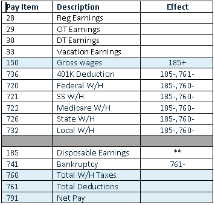
NOTE
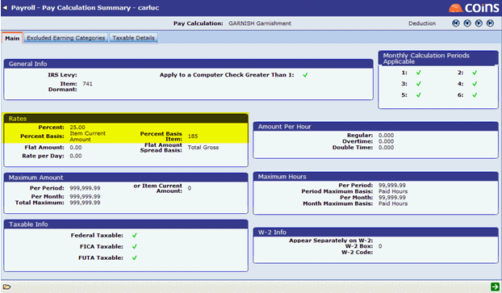
Pay Items with Union or
Occasionally, you may wish to identify or segregate values paid as Union Wages or
You may elect to have rates of pay default from the Union Rate File or
To accumulate
NOTE
Presenting Pay Items on a Pay Slip
The Pay Slip field on a Pay Item determines whether it will display on a
While a 401K Deduction and all other reductions in pay will be classified as a Deduct, most earnings will appear as Payment. How you classify a Reimbursement issued along with payroll is up to the user, but most will be classified as Other, since it is not a payment that will affect Earnings for the period or year.
Additional
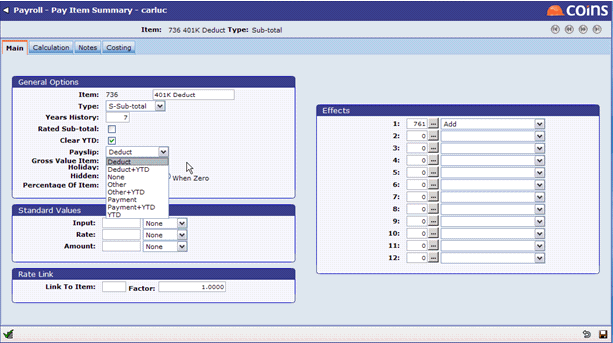

Posting Detail Hours into
To define how hours will be presented in
- In Units in the Procurement module, define how hours will be presented in
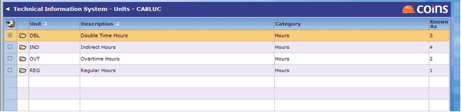
- On Pay Items whose Type is set to Hours, set the Unit to the appropriate Hour type set up in Step 1.
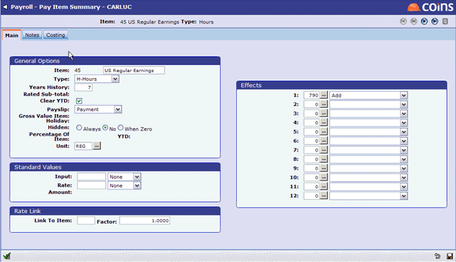
Using Pay Items to Determine Payroll Costing
Pay Items hold information on how payroll costs incurred will be posted to
Expensing Costs
All of the Pay Items associated with the cost of
In the example below, all earnings, employer burdens, employer taxes, and payroll allocations are rolled up into a single Pay Item 790. The costing will be a DEBIT to accrue the expenses, and the cost method will be
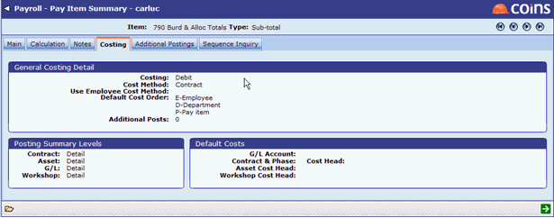
Creating Credit Entries
Credit Entries posted to the General Ledger need to be defined on Pay Items. The entries will comprise employer liabilities, employee taxes withheld, and Net Wages. Users will need to set Pay Items which represent these pieces of payroll to create Credit Entries.
Users can use Masking to build a General Ledger Account. The Default Cost Order field on a Pay Item tells
Below is a Pay Item which represents the Employer's portion of Social Security Tax. This pay item is already set to affect Total Burdened and Allocated Costs (Pay Item 790) which is where the Debit will originate. The Credit will need to be defined on the Employer's Portion of Social Security Tax.
On the costing Tab, set Costing to Credit, cost method will be GL, set the default cost order, and enter the Liability mask or full account. In the example shown below, let's assume GL Element 1 is the Division, Element 2 is the Profit
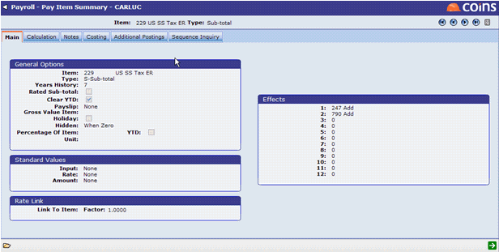
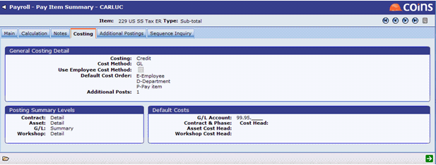
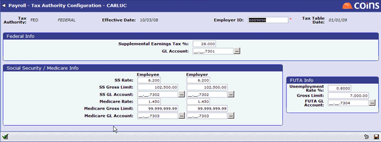
Detailed Costing to the General Ledger
If you wish to expense costs to a GL account other than the one prescribed on the cost code, you will need to set up the components of your Total Pay Item to allow for additional postings. All of the standard components of payroll, such as taxes and insurance, can be configured to post to unique GL accounts. Additionally, Employer provided expenses such as Health Insurance, 401k Match, and Union Fringes can be configured to post:
- On the Pay Item that represents each component of Gross
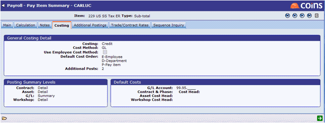
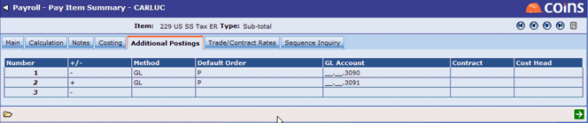
When Calculations is run, the full value of Burdened
Using this method will allow for various employer provided Fringe Benefits to post to separate expense accounts rather than posting to a single bucket.
You may also use fixed fields in masking. For example, you may have natural general ledger expense accounts set up for Direct JC